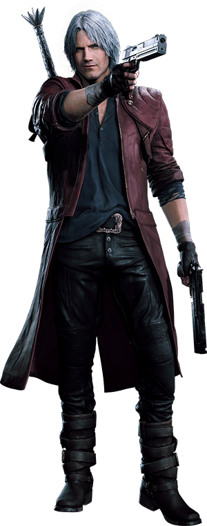
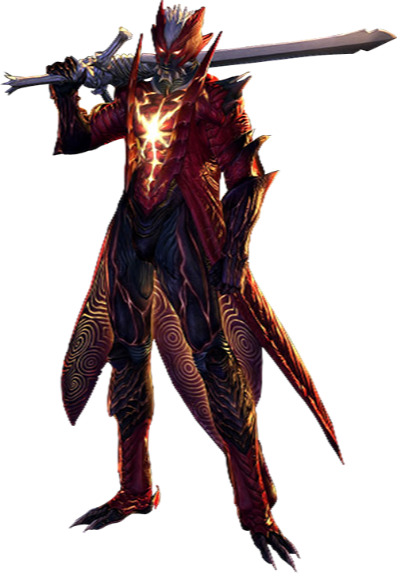

Dante Esparda - Cazademonios


Dante es el principal protagonista de la saga Devil May Cry.
Nacido de la unión humana llamada Eva y del guerrero Legendario Caballero Oscuro 'Sparda',
Dante es un híbrido (semi-demonio) el cual ha dedicado gran parte de su vida a eliminar demonios
y demás criaturas infernales que han hecho su aparición en el mundo de los humanos, a través de su
propia agencia de caza-recompensas de fenómenos paranormales llamada Devil Never Cry,
más adelante renombrada como 'Devil May Cry'.
Dante posee la capacidad de manipular un gran arsenal que se extiende, desde espadas demoníacas, hasta el uso de armas de fuego,
como lo son sus dos pistolas gemelas Ebony y Ivory (Ébano y Marfil). Dante se muestra como un tipo con bastante actitud rockera y
despreocupada a lo largo de la trama.